3. ЭЛЕКТРОМАГНЕТИЗМ
3.1. Электромагнетизм3.2. Взаимодействие токов
3.3. Принцип суперпозиции
3.4. Закон Био-Савара-Лапласа
3.5. Магнитный поток
3.6. Напряженность магнитного поля
3.7. Силы, действующие в магнитном поле
3.8. Взаимодействие параллельных проводников с током
3.9. Закон Ампера
3.10. Работа по перемещению проводника стоком в магнитном поле
3.11. Действие магнитного поля на контур с током
3.12. Магнитный момент контура с током
3.13. Явление электромагнитной индукции. ЭДС электромагнитной индукции
3.14. Явление взаимоиндукции
3.15. Явление самоиндукции
3.16. Вихревые токи. Токи Фуко
3.17. Энергия магнитного поля
3.18. Плотность энергии магнитного поля
3.19. Единицы измерения магнитных величин
3.20. Магнетики. Вещества в магнитном поле
3.21. Движение зарядов в магнитном поле
3.22. Уравнения Максвелла. Обобщение теории магнитного поля
3.23. Анализ массово-зарядового состояния элементарных частиц
3.24. Приложение к теореме Остроградского- Гаусса 3.25. 1 уравнение Максвелла
3.26. 2 уравнение Максвелла
3.27. 3 уравнение Максвелла
3.28. 4 уравнение Максвелла
3.29. Анализ III и IV уравнений
3. Электромагнетизм
3.1. Электромагнетизм
Это раздел электричества, рассматривающий воздействие движущихся зарядов на движущиеся заряды.
Движение заряда может быть равномерным (I закон Ньютона). Если к такому заряду привязать систему отсчета, то в этой системе заряд не движется. Таким образом, если другая заряженная частица движется параллельно первой с той же скоростью и в том же направлении, то между ними не будет магнитного взаимодействия, а только кулоновское взаимодействие. Итак, чтобы магнитное взаимодействие проявилось, частицы должны двигаться или с разной скоростью или в разном направлении.
Связь характеристик магнитного поля:
B = µ0*H;
где B - индукция магнитного поля;
H - напряженность магнитного поля;
µ0 = 1,16 * 10-6
Для того, чтобы заряды направленно двигались в пространстве, необходимо наличие проводящей среды, специально ориентированной в пространстве.
3.2. Взаимодействие параллельных токов
Закон Фарадея:
,
где µ - магнитная характеристика среды, называемая магнитной проницаемостью.
Направление токов влияет на силу взаимодействия.
По аналогии с электростатикой, где сила определяет напряженность, а напряженность - индукцию, в магнетизме напряженность и индукция - силовые характеристики. Принято в электростатике основной силовой характеристикой считать напряженность, а в магнетизме - индукцию.
Правило буравчика:
Если ток направлен по закрутке буравчика, то шляпка вращается по силовой линии. В каждой точке пространства направление силовых линий совпадает с направление касательной. Таким образом, силовые линии магнитного поля являются замкнутыми.

3.3. Принцип суперпозиции
Примем на рисунке направление токов перпендикулярно плоскости рисунка. Тогда в точках:

A:Bрез = B1 + B2
D:Bрез = B1 - B2
C:Bрез=
Принято, направление линий, перпендикулярных плоскости рисунка, изображать:
Д - от нас,
 - к нам.
- к нам.
3.4. Закон Био-Савара – Лапласа
3.4.1. Магнитное поле проводника с током
В общем случае для определения магнитного поля от произвольного проводника с произвольным знаком протекания тока проводим дифференцирование. Определяем полную индукцию, как сумму элементарных индукций от элементов тока dl, содержащих dq движущегося заряда.

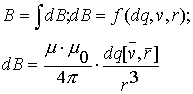
Согласно последнему утверждению, совпадает с перпендикуляром к плоскости, образованной векторами cкорости и радиус- вектора
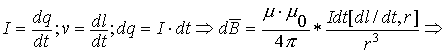
Пользуясь известными формулами, получим:
Последняя формула и есть закон Био-Савара-Лапласа для определения магнитной индукции для проводника с током.
3.4.2. Применение закона Био-Савара-Лапласа для анализа магнитных полей проводников с током различной конфигурации. Конечный и бесконечный прямолинейный проводник с током
Примем условиями:
.
Тогда
Переведем в скалярную форму и выразим геометрические величины через один параметр, параметр a:
;
Используем условия геометрии:
при условии, что:
Подставляя полученное в формулу для dB, получаем:
Это выражение для составляющей магнитного поля в точке p элемента проводника с током dl. Тогда полное магнитное поле проводника с током в искомой точке принимает вид:
Назовем предельные углы α1 и α2 как углы, под которыми из искомой точки видны концы проводника, создающего магнитное поле. Тогда для конечного проводника с током это будет выглядеть так:
.
Если проводник бесконечен, т.е.
, то: 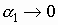; .
Тогда
.
3.4.3. Магнитное поле кругового проводника с током
Направление магнитного поля (B) внутри кругового проводника с током также подчиняется правилу буравчика (шляпка как ток, буравчик как индукция). Магнитное поле элемента dl кругового проводника с током:

Тогда для замкнутого проводника с током в центре витка магнитное поле определится как:
- Магнитная индукция кругового проводника (контура) с током в центре контура.
3.4.4. Магнитное поле вдали от центра контура с током
Элементы контура с током dl создают в точке А элементарные индукции dB, являющиеся трехмерным образованием в виде конуса, который дает результирующую B, равную:

Это магнитное поле на оси контура с током.
При : (смотри формулу для центра контура)
3.4.5. Магнитное поле соленоида
Если контура с током последовательно соединить в одном месте пространства, то такое образование называется соленоидом.

В таком соленоиде магнитные потоки от последовательно соединенных контуров суммируются. Так как магнитные силовые линии замкнутые, то внутри соленоида число силовых линий равно числу силовых линий всего соленоида.
А раз объем внутри соленоида ограничен, то можно сказать, что магнитное поле сконцентрировано внутри соленоида, снаружи рассеяно, и магнитные силовые линии внутри соленоида параллельны между собой и поле внутри соленоида считается однородным, вне соленоида - неоднородным. Величина магнитной индукции внутри соленоида записывается так:
,
где μ - среда внутри соленоида, N - число витков соленоида, l - длина соленоида.
Если обозначить 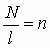 - удельное число витков
3.5. Магнитный поток
По теореме Остроградского-Гаусса в общем случае поток любого вектора  через поверхность S численно равен
через поверхность S численно равен
Индукция  - вектор в пространстве, поэтому можно применить понятие потока индукции . Если площадь фигуры, пересекающей силовые линии магнитного поля - площадь контура, по которому протекает ток, тогда - магнитный поток контура с током. Если имеется множество последовательно соединенных контуров, то есть соленоид, то общее количество магнитных силовых линий равно сумме силовых линий, образованных каждым контуром.
- вектор в пространстве, поэтому можно применить понятие потока индукции . Если площадь фигуры, пересекающей силовые линии магнитного поля - площадь контура, по которому протекает ток, тогда - магнитный поток контура с током. Если имеется множество последовательно соединенных контуров, то есть соленоид, то общее количество магнитных силовых линий равно сумме силовых линий, образованных каждым контуром.
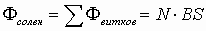. Эта величина называется потокосцепление =NФвитков =Ф.
3.6. Напряженность магнитного поля
Зная, что , а магнитная индукция для бесконечного прямолинейного проводника с током равна
.
Аналогично:
Для конечного проводника:
В центре контура с током: .
На оси кругового витка:
3.7. Силы, действующие в магнитном поле
Сила Лоренца - сила, действующая со стороны магнитного поля на движущийся заряд. Эмпирически получаем F В векторной форме F, а в скалярной форме .
Принято правило левой руки (для “+” заряда для нахождения направления силы Лоренца): если вектор  входит в ладонь, вектор направлен по отогнутым пальцам, то 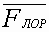 направлена, как показывает большой палец. Правило правой руки для отрицательного заряда аналогично. Если на заряд действуют и электрическая и магнитная силы, то в этом случае сила Лоренца равна в векторной форме:
входит в ладонь, вектор направлен по отогнутым пальцам, то 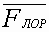 направлена, как показывает большой палец. Правило правой руки для отрицательного заряда аналогично. Если на заряд действуют и электрическая и магнитная силы, то в этом случае сила Лоренца равна в векторной форме:
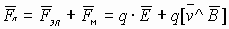.
Результат действия этих двух сил будет зависеть от их ориентации в пространстве.
3.7.1. Сравнение электрической и магнитной сил
Сравним взаимодействие зарядов (сила Кулона) и токов, образованных этими зарядами (сила ампера) в параллельных проводниках.

Магнитное поле, действующее на заряд, создается другим зарядом, движущимся относительно первого. Предположим, что ν1=ν2, заряды находятся на расстоянии r друг от друга. Возьмем перпендикулярно  , то есть , тогда по закону Био-Савара-Лапласа выражаем
, то есть , тогда по закону Био-Савара-Лапласа выражаем
с учетом этого получили выражение для Fэ/Fм. Известно, что . Пусть среда вакуум. Тогда если ε=1, μ=1,
Получим .
Следствия:
- Электрическая сила больше магнитной
- Магнитная сила принимает существенные значения, когда скорости зарядов близки к скорости света. Если бы С
- Поскольку скорость света конечна, магнитная сила релятивистская, то есть проявляет себя при скоростях, близких к скорости света.
3.8. Взаимодействие параллельных проводников с током
Вблизи каждого проводника с током формируется магнитное поле (сила, действующая на проводник с током, определяется по правилу левой руки: магнитные силовые линии входят в ладонь, ток по вытянутым пальцам, тогда сила направлена по отогнутому большому пальцу)

Два близко расположенных проводника с током притягиваются, с противоположным направлением токов - отталкиваются. Силы магнитного и электрического взаимодействия между движущимися зарядами противоположны.
3.9. Закон Ампера
Касается действия силы на проводник с током со стороны магнитного поля.
Ориентируем проводник в соответствии с направлением тока.

Если проводник прямолинейный, то мы можем проинтегрировать по всей длине проводника.
- закон Ампера в интегральной форме.
- закон Ампера в скалярной форме.
Сила Ампера указывает величину и направление силы, действующей на проводник с током I, длиной l помещенный в однородное магнитное поле. Направление задается правилом левой руки ( - в ладонь, - вдоль пальцев, - вдоль большого пальца).
- в ладонь, - вдоль пальцев, - вдоль большого пальца).
3.10. Работа по перемещению проводника с током в магнитном поле
Длина проводника l, и перемещается он слева направо. Тогда работа по перемещению элемента проводника с током на расстояние dr равна:

.
Условия перемещения:
- магнитное поле и проводник в пространстве взаимно перпендикулярны, 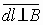.
- Направление перемещения проводника параллельно силе, вдоль которой мы совершаем работу по перемещению. То есть
- площадочка, заметаемая элементом проводника с током dl при его перемещении на dr. Тогда поток векторов B, проходящих через эту площадку:
Работа по перемещению проводника с током в магнитном поле определяется величиной тока, величиной магнитной индукции и площадью закрываемой (заметаемой) проводником при движении. Она также определяется величиной тока и магнитным потоком, проходящим через площадь, закрываемую проводником при движении.
3.11. Действие магнитного поля на контур с током
Для удобства предположим, что контур имеет прямоугольную форму.

1) Пусть dl перпендикулярен B, т. е. любой элемент контура перпендикулярен силовым линиям. Cилы Ампера, действующие на каждый прямолинейный участок контура, указаны на рисунке.
Если контур с током расположен перпендикулярно силовым линиям, то действие поля выражается в сжимании и разжимании контура. Если же контур состоит из упругого проводника, то внешнего изменения положения в пространстве не будет.

2) площадь контура с током параллельна силовым линиям. То есть нормаль плоскости контура перпендикулярна вектору магнитной индукции.
Тогда силы Ампера на каждом участке:
I. Sin=1, FA≠0, сила направлена от нас.
II, IV. Sin=0, FA=0, То есть на элемент контура с током лежащим вдоль силовых линий FA не действует.
III Sin=1, FA≠0, сила направлена к нам. Тогда если контур с током закрепить в точках A и B ,то при таком расположении его в магнитном поле он будет вращаться, то есть на него действует момент силы.
3.12. Магнитный момент контура с током
Пусть r - плечо силы. (См. предыдущий рисунок) .
.
Если FA перпендикулярна r, тогда Sin=1. Это момент силы, действующий на I или III участок контура. Площадь S - между линией A B и участком тока I или III.
Поскольку в каждой из противоположных сторон контура действует самостоятельная сила Ампера, то за площадь для суммарного момента сил принимается не половина, а вся площадь контура. Тогда вводится понятие магнитного момента контура с током как собственной характеристики контура, которая численно равна произведению P=IS, где S это вся площадь контура. Направление магнитного момента задается нормалью контура с током
Тогда полный момент силы, действующий на контур с током в магнитном поле, численно равен: .
3.13. Явление электромагнитной индукции. ЭДС электромагнитной индукции

Проводник, по которому не пропускают ток, помещаем в магнитное поле. Будем перемещать проводник перпендикулярно вектору магнитного поля. По закону Лоренца так как . Мы получили, что свободные заряды, которые, по определению, имеются в проводнике, будут перемещаться вдоль проводника. В результате перераспределения зарядов в проводнике при их движении на концах проводника возникает разность потенциалов, которая создает электрическое поле в проводнике: .
Тогда напряженность электрического поля в проводнике
Если подключим гальванометр, то можно выразить напряженность через напряжение .
В равновесии Fл=Fк. То есть: . Если закон перемещения проводника в магнитном поле произволен, то разбиваем все перемещение на отрезки dr:
, где dS=drℓ - площадь, заметаемая проводником при перемещении.
Правило Фарадея: величина разности потенциалов, возникающих на концах проводника при его перемещении в магнитном поле прямо пропорциональна скорости изменения магнитного потока.
Если концы проводника замкнуты между собой, то в цепи протекает ток так, если бы проводник являлся источником тока. Тогда по закону Ампера сила, действующая на проводник с током в магнитном поле (правило левой руки) направлена в сторону, противоположную перемещению проводника в магнитном поле, то есть эта сила препятствует перемещению. Тогда:
- разность потенциалов, возникающих на концах проводника, называют ЭДС магнитной индукции.
- поскольку ЭДС вызывает силы, препятствующие движению проводника, то в законе Фарадея ставят знак “минус” (правило Ленца):
3.14. Явление электромагнитной индукции (взаимоиндукции)

В 1831 году Фарадей установил, что если изменять магнитный поток, проходящий через контур, то в этом контуре возникает ЭДС, препятствующая изменению внешнего магнитного поля. Пусть есть контур I, к которому подключен гальванометр, и контур II, к которому подключен резистор, и источник ЭДС.
- силовые линии II проводника пересекают первый контур. Если менять величину тока во II контуре, то меняется B2 , то есть магнитный поток, создаваемый вторым контуром также меняется. И по закону Фарадея в первом контуре возникает ЭДС.
- Удаление или приближение второго контура также вызывает ЭДС в первом.
- Можно поворачивать контура относительно друг друга, чтобы вызвать ЭДС в I контуре.
- Вызвать ЭДС можно также изменением магнитной среды, которая находится между контурами.
Приложение:
- Контуры с током, близко расположенные друг с другом называют связанными.
- Влияние одного контура на другой возможно только, если ток в контурах переменный (принцип трансформатора). Для усиления взаимодействия используют последовательно соединенные контура – соленоиды.

Пусть:
Соленоид 1 содержит N витков, а соленоид, II: N2 витков. S - поперечное сечение соленоида.
Если в соленоиде I изменить величину тока, то в соленоиде II возникает ЭДС, равная:
Если в каждом из контуров соленоида возникает ЭДС, то результирующая ЭДС соленоида будет равна произведению числа витков соленоида на ЭДС одного витка:
то есть: , где L12 - коэффициент взаимной индукции первого соленоида относительно второго.
Если источник неэлектрических сил подключить ко второму соленоиду, а гальванометр к первому, то ЭДС, возникающую в первом соленоиде можно будет рассчитать аналогично:
, где  - коэффициент взаимоиндукции II-ого соленоида относительно первого. Таким образом L21=L12
- коэффициент взаимоиндукции II-ого соленоида относительно первого. Таким образом L21=L12
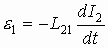
3.15. Явление самоиндукции

Возьмем один соленоид. Если в таком соленоиде изменять величину тока, то в контуре соленоида возникает ЭДС, стимулирующая магнитное поле, и препятствующая изменению тока в соленоиде.
- коэффициент самоиндукции, связывающий ЭДС электромагнитной индукции и ток. Его называют индуктивностью соленоида.
Индуктивность - характеристика соленоида, связывающая скорость изменения тока в соленоиде с препятствующей ей ЭДС и определяемая только геометрическим устройством соленоида.
 - аналогия со вторым законом Ньютона.
- аналогия со вторым законом Ньютона. - вторая производная заряда, аналогично в механике
- вторая производная заряда, аналогично в механике - вторая производная пути. Тогда закон электромагнитной индукции похож на
- вторая производная пути. Тогда закон электромагнитной индукции похож на - второй закон механики Ньютона.
- второй закон механики Ньютона. аналогичные характеристики
аналогичные характеристики
3.16. Вихревые токи или токи Фуко
В связанных контурах для передачи энергии переменного электрического тока из одного участка цепи в другой, часто используются магнитопроводящие среды.

При подаче переменного напряжения (тока) на первый 1 соленоид со второго 2 можно снять переменное напряжение (ток) противоположного направления (закон Фарадея-Ленца) Так как магнитное поле замкнутое, то сердечники делаются сплошными, чтобы избежать потери магнитного поля. Тогда сам сердечник создает замкнутый контур, по которому может протекать электрический ток. Если сопротивление сердечника мало, то по закону Джоуля-Ленца количество теплоты, выделившейся на этом сердечнике, будет велико. То есть . Эта теплота отбирается от энергии переменного электрического тока, подаваемого на соленоид. Для того, чтобы избежать паразитных тепловых потерь, магнитнопроводящие сердечники делаются из специального металла, обладающего большим сопротивлением (углеродистая сталь - пермаллой, ферритовые сплавы).
Если в связанных между собой механических частях какой- либо установки присутствуют электрические цепи с переменным током, то для предотвращения перемещения одной механической части относительно другой( когда их невозможно закрепить жестко) подвижные части делают в виде электрической цепи. ЭДС препятствует изменению магнитного поля, вызываемого движением. Возникающая ЭДС создает собственное магнитное поле, препятствующее движению механической детали. Таким образом, её движение ограничено. Это явление называют током Фуко.
Индуцирование переменного тока и напряжения используется для создания переменных токов и напряжений в местах, недоступных человеку (в вакуумных устройствах, где требуется разогреть какую-либо деталь)
Пропуская переменный ток по наружному соленоиду мы индуцируем электрический ток внутри вакуумного объема и так как соленоид внутри замкнут сам на себя, то энергия тока второго соленоида переходит в тепловую энергию. Такие устройства называют индукционными печами (температура достигает в них ≈1000С).
3.17. Энергия магнитного поля
Как любое поле, магнитное поле обладает энергией. Легче всего исследуется однородное магнитное поле, которое находится в соленоиде.

При замкнутом ключе внутри соленоида накапливается магнитная энергия. Если величину тока не менять в стационарных условиях, то часть тока идет через нагрузку, например, лампочку Л, другая часть через соленоид L.
При выключении ЭДС батареи в момент времени ток, протекающий в соленоиде, уменьшается и вызывает ЭДС электромагнитной индукции, препятствующую этому уменьшению. Эта ЭДС стремиться поддержать ток на нагрузке.
Поэтому величина тока на приборе плавно уменьшиться. Это происходит за счет энергии магнитного поля, накопленной в соленоиде.
Можно записать работу по переносу заряда для поддержания тока в цепи при выключении ключа, которая происходит за счет энергии магнитного поля, запасенной в соленоиде.
а так, как (Закон Фарадея-Ленца) и dq=Idt,
то 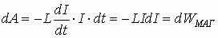- закон сохранения энергии.
Тогда полная энергия магнитного поля:
- полная магнитная энергия, запасенная в соленоиде с индуктивностью L. Аналогична ситуация с включением.

Схема включения цепи с соленоидом. Время релаксации τ - время, необходимое для установления в рабочих цепях режима равновесной (стационарной) работы.
3.18. Плотность энергии магнитного поля
Плотность энергии магнитного поля – количество магнитной энергии в единице объема соленоида:
где
Итак:
аналогично:
.
3.19. Единицы измерения магнитных величин
- Магнитный момент: , где
 - единичный вектор, нормаль к площади контура, определяющий ее ориентацию в пространстве.
- единичный вектор, нормаль к площади контура, определяющий ее ориентацию в пространстве. - Магнитная индукция: так как (см. § 12), то - тесла.
- Магнитный поток Ф:
. - Потокосцепление
- Индуктивность - коэффициент, зависящий от геометрических размеров соленоида.
- Напряженность магнитного поля для витка с током или для соленоида .
- Магнитная проницаемость m - показывает, во сколько раз магнитное поле в среде отличается от магнитного поля в вакууме.- для среды.
- безразмерная. - Магнитная постоянная
Аналогия: магнитное поле ↔ механика
Механика |
Магнетизм |
S( r ) – путь |
q - заряд |
- скорость |
- ток |
- ускорение |
|
m - мера инертности (сопротивляемость силе) |
L - определяет инерциальность электрических цепей (сопротивляемость изменению тока) |
F - сила, заставляющая тело двигаться. |
ε – сила, двигающая заряды, не электрического происхождения. |
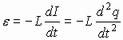 |
Аналогия между силой и ЭДС заключается в том, что сила есть вектор и направление его действия в пространстве легко установить, а ЭДС - скаляр, и направление его действия на изменение тока в цепи указывается знаком “-”
|
3.20. Магнетики. Вещества в магнитном поле
Вещества, способные намагничиваться и влиять на направление вектора магнитной индукции внешнего поля B, называются магнетиками.

Способность намагничиваться - создание собственного магнитного поля в веществе, которое или усиливает, или уменьшает внешнее магнитное поле.
Собственные магнитные свойства вещества определяются электронами, связанными с атомами. Строение атома подразумевает наличие электрона e, вращающегося вокруг ядра. Магнитный момент электрона  , то есть каждая орбита электрона в атоме обладает собственным магнитным моментом и создает собственное магнитное поле. В целом в веществе суммарные магнитные моменты электронов в атоме расположены хаотично и их сумма зачастую равна нулю.
, то есть каждая орбита электрона в атоме обладает собственным магнитным моментом и создает собственное магнитное поле. В целом в веществе суммарные магнитные моменты электронов в атоме расположены хаотично и их сумма зачастую равна нулю.
Под действием внешнего магнитного поля собственные магнитные поля, созданные электронами, упорядочиваются. Это и есть явление намагниченности. Оно может сохраняться после снятия магнитного поля, а может и исчезать. У ферромагнетиков оно сохраняется, а у диа и парамагнетиков исчезает.
В результате поле равно:
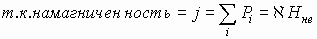,
где каппа  - магнитная восприимчивость, которая определяется внешним воздействием, а и - магнитные моменты электронных орбит.
- магнитная восприимчивость, которая определяется внешним воздействием, а и - магнитные моменты электронных орбит.
;
- магнитная проницаемость.
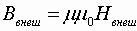.
Для разных веществ значение может принимать как положительные, так и отрицательные значения. В большинстве веществ собственные магнитные моменты атомов (молекул) не зависят друг от друга и хаотично расположены в пространстве. Если к такому веществу приложить внешнее поле, то собственный магнитный момент каждого атома стремится, как волчок, выровнять положение оси вращения вдоль силовых линий внешнего поля.

Bвне - индукция внешнего магнитного поля, Pm- собственный магнитный момент атома.
Изменение собственной оси вращения (собственного магнитного момента) относительно вектора магнитной индукции (внешнего поля) называется прецессией.
Собственный механический момент или количество движения Ls (спин)
Механические моменты электронов в атоме могут отличаться только направлением движения по орбите (вдоль и против часовой стрелки).
- Если внешнее магнитное поле затрачивает энергию на прецессию, то её результирующее магнитное поле ослабляется. Такие вещества называют диа–магнетиками: .

- В некоторых веществах внешнее магнитное поле не затрачивает энергию на прецессию, а разворачивает весь атом так, чтобы его собственное магнитное поле совпадало с внешним магнитным полем. Эти вещества -парамагнетики. Для них .
Парамагнетики

Стрелками укажем магнитные моменты отдельных атомов.
Ферромагнетики.

Для объяснения ферромагнетизма вводим понятие доменов. Домен - совокупность атомов с одинаковым направлением собственных магнитных полей. Подобные совокупности атомов требуют меньше энергии для образования доменов, т.е. энергетически более выгодны по сравнению с разрозненными атомами. В целом собственное магнитное поле вещества равно нулю. Под действием внешнего магнитного поля домены могут увеличиваться за счет других доменов вплоть до поглощения неориентированных доменов, то есть все пространство вещества заполняется доменами, ориентированными вдоль поля. При снятии внешнего поля обратной переориентации не происходит, так как это энергетически не выгодно. В этом случае магнитная восприимчивость составляет тысячи и десятки тысяч единиц. Оказывается, реакция вещества на воздействие внешнего магнитного поля носит нелинейный характер. Это определяется способностью собственных магнитных моментов переориентироваться во внешнем магнитном поле. Сначала идёт резкое изменение ориентации во внешнем магнитном поле, магнитные моменты ориентируются вдоль силовых линий магнитного поля. Дальнейшее увеличение магнитного поля не изменяет намагниченность, так как все магнитные моменты уже ориентированы вдоль поля. Зависимость результирующего магнитного поля в веществе в целом в зависимости от внешнего поля носит характер гистерезиса.

B1 - остаточная индукция.
H1 - коэрцетивная сила.
B1 - в веществе остается собственное магнитное поле без внешнего магнитного поля H1 = 0, (так создаются постоянные магниты).
H1 - внешнее поле, необходимое для снятия собственной намагниченности, B1=0. Эта величина называется коэрцетивная сила.
Анализ петли гистерезиса см. в разделе “Сегнетоэлектрики”. Если коэрцетивная сила велика, то говорят, что ферромагнетик жёсткий, если мала - то мягкий.
3.21. Движение зарядов в магнитном поле

1) Вектор скорости перпендикулярен силовым линиям.
направленная перпендикулярно скорости – центростремительная.
Скорость изменяется только по направлению, но не по величине. Сила Лоренца, действующая на движущуюся частицу в магнитном поле, закручивает траекторию движения в окружность, то есть появляется центростремительное ускорение: значит v изменяется только по направлению, но не по величине. Тогда приравняем
 ,
,
где Т – период обращения заряда по орбите
2) угол между направлением скорости и силовыми линиями не равен 90 градусам.
, 0<α<90
Дальнейший анализ траектории движения частицы относительно вектора скорости аналогичен пункту 1).

Здесь сила Лоренца
.
Новой характеристикой здесь является
l - шаг спирали.


Приложение:
- если частица движется вдоль силовых линий магнитного поля, то сила Лоренца равна нулю.
- Если частица неподвижна в магнитном поле, то сила Лоренца также равна нулю.
3.22. Уравнение Максвелла. Обобщение теории магнитного поля (обобщение электродинамики)
Имеется замкнутый контур и внешнее магнитное поле, меняющееся во времени. Если внешнее магнитное поле создается соленоидом с током, то изменение магнитного поля через контур произойдет, если
- в соленоид вносим сердечник,
- меняем ток в этом соленоиде,
- изменяем положение соленоида относительно контура.
Тогда в контуре появляется ЭДС по закону Фарадея-Ленца, препятствующая изменению внешнего магнитного поля, то есть стрелка прибора, который можно подключить к контуру, отклоняется, в контуре идет движении зарядов, то есть появляется электрический ток. Так как до включения магнитного поля заряды в проводнике находились в неподвижности, значит после включения поля сила Лоренца не должно действовать на заряды. Откуда же берется ЭДС? Единственным объяснением появления ЭДС в контуре, то есть движения зарядов, является появление электрического поля, сила Кулона которого заставляет заряды двигаться. Напряженность такого поля
Не зная источника внешнего магнитного поля можно записать для ЭДС в контуре
Примем
- оператор дифференцирования по координатам (декартовым или полярным). Аналогично
. Окончательно имеем:
Напряжение, выраженное через законы электростатики, и ЭДС, возникшее в контуре, есть одно и то же. Тогда интегралы равны между собой, а, следовательно, и подинтегральные выражения равны.
.
Здесь отображена связь между неоднородным электрическим полем и переменным магнитным.
3.23. Анализ массово-зарядового состояния (q/m) элементарных частиц

С поверхности вещества испаряют часть атомов или молекул. Как правило, при этом такие атомы обладают зарядовыми свойствами. Далее эти атомы ускоряются в электрическом поле E, и движущийся поток атомов пропускают через магнитное поле B. По закону Лоренца эти заряды в магнитном поле отклоняются. Тогда на экране за магнитным полем в разных местах оседают атомы разных зарядов. По степени отклонения атомов от прямолинейного распространения можно судить о заряде атома.
Частицы в магнитном поле отклоняются. Тогда на экране за магнитным полем в разных местах, например:
Заряд q= 1e – в точке 2 на экране.
Заряд q=2e – в точке 1 на экране.
Процесс разделения частиц по зарядам называется сепарированием, а прибор, анализирующий состав этих пучков - масспектрограф.
3.24 Приложение к теореме Остроградского-Гаусса
Для любого вектора a можно записать его поток:
Так как интегрирование и дифференцирование по сути своей противоположные операции, то можно записать, например:
Интегрирование и дифференцирование по одному и тому же параметру по сути взаимно компенсирующие операции. Тогда можно записать для вектора а:
Где dV=dx*dy*dz.
А так же:

Таким образом, можно связать линейный, поверхностный и объемный интегралы, т.е. можно переходить от линейного к поверхностному, и от поверхностного к объёмному интегралу.
Приложение к теореме Остроградского-Гаусса мы используем при рассмотрении уравнений Максвелла.
3.25. I-ое уравнение Максвелла
Итак, мы из предыдущих параграфов (§ 22, 24) получаем закон Фарадея-Ленца:
ЭДС, возникающая в контуре при изменении магнитного поля, регистрируется гальванометром как напряжение на концах проводника контура. Тогда приравняем подинтегральные выражения.
.
Переменное магнитное поле породило неоднородное электрическое поле, которое создало электрический ток, создающий собственное поле, препятствующее (знак “-“) изменению внешнего магнитного поля (закон сохранения энергии). Это и есть I-ое уравнение Максвелла.
3.26. II-ое уравнение Максвелла

Используем соленоид для создания магнитного поля. r- радиус соленоида, l - его длина, N - число витков, n - удельное число витков соленоида. Запишем напряженность соленоида
 .
.
Если предположим, что соленоид намотан в один слой и витки плотно прилегают друг к другу, то - толщина одного витка. Тогда можно считать d, как элемент l, или d=dl.
Продифференцируем левую и правую часть по координатам.
- площадь сечения проводника, из которого сделан соленоид. По определению
, плотность тока
Если внутри соленоида находится среда с μ>1, то магнитное поле в соленоиде усиливается за счет электрического поля, обусловленного протекающим по проводнику током. Так как среда в соленоиде непроводящая, то электрическое поле вызывает в этой среде только смещение зарядов (смотри раздел “диэлектрики”). Тогда плотность тока зарядов проводимости и смещенных зарядов в самом общем случае, когда есть и свободные и связанные заряды
.
Как и в диэлектриках смещение зарядов вызывается электрической индукцией, а именно . Тогда имеем - второе уравнение Максвелла, которое говорит, что электрическое поле, которое вызывало в проводнике электрический ток проиндуцировало в среде усиление магнитного поля, то есть сформировало его.
В I уравнении знак “-” означает, что переменное магнитное поле вызывает электрический ток, который генерирует магнитное поле, препятствующее изменению внешнего магнитного поля. Это связанно с законом сохранения энергии. Во II уравнении минус не ставится, так как за направление электрического тока принято движение положительных зарядов, а реально движутся отрицательные.
3.27. III-e уравнение Максвелла

В системе зарядов поток векторов напряженности по теореме Остроградского-Гаусса равен
Если заряды распределены произвольно в пространстве, то введем понятие объемная плотность заряда:
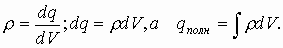
Тогда по теореме Гаусса
Иначе говоря 
По приложению к т. О.-Г. перейдем от поверхностного к объемному интегралу.

Это и есть III-е уравнение Максвелла. Из него следует, что источником электрического поля являются заряды.
3.28. IV уравнение Максвелла

Если есть соленоид, по которому течет ток, то соленоид формирует магнитное поле. Принцип силовых линий магнитного поля B - замкнутость. Найдем поток векторов B, который по теореме Остроградского есть . Полный поток векторов найдем, замкнув соленоид поверхностью S.
Чтобы посчитать этот поток, мы должны учесть как входящие, так и выходящие через поверхность S силовые линии B магнитного поля. Результатом является компенсация этих линий, то есть общий поток равен нулю, т.к. количество входящих и выходящих линий B через поверхность S одинаково из-за замкнутости линий. Используя приложение к теореме перейдем от поверхностного интеграла к объемному
Отсюда следует, что в объеме, в котором находится соленоид, как источник магнитного поля, нет зарядов. Это IV уравнение Максвелла.
3.29. Анализ III и IV уравнений
Из III уравнения Максвелла следует, что в объеме, из которого исходят силовые линии электрического поля, находятся электрические заряды, а из IV следует, что объем, из которого исходят силовые линии магнитного поля не содержит зарядов магнитного поля.
Это доказательство того, что в природе не существует магнитных зарядов, соответственно, нет потенциала магнитного поля.
Итак, рассмотренные 4 уравнения Максвелла считаются основными, но есть еще три дополнительных.
Эти уравнения соединяют свойства электрических и магнитных полей в вакууме и средах.Первые два уравнения Максвелла получены из поверхностных интегралов, для которых важно задать направление силовых линий, значит, в уравнениях обязательно отмечается векторность полей.
(I).
(II)
А III и IV уравнения – количественные, то есть скалярные уравнения.
или умножив это уравнение на получим  (III).
(III).
И наконец (IV).
Система уравнений Максвелла отображает единую теорию электромагнитного поля и показывает, что оно есть единое поле, то есть электрического поля не существует без магнитного, а магнитное поле не существует без электрического. Можно ещё сказать, что переменное магнитное поле порождает неоднородное электрическое, а переменное электрическое поле порождает неоднородное магнитное поле.